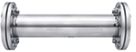
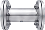
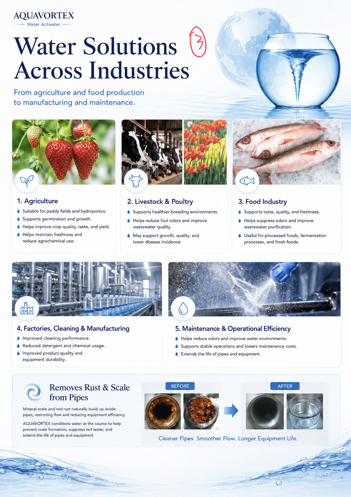
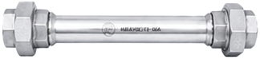
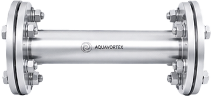
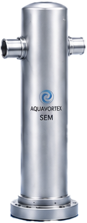
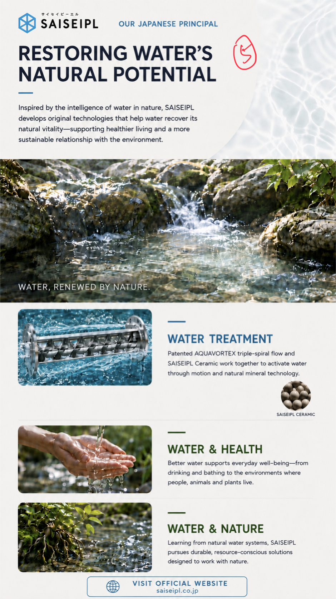

Dynamic vortex flow
Recreates nature’s spiral motion to energize and revitalize water.
AQUAVORTEX / Water Activator
Recreating the mechanisms of nature through dynamic vortex flow.
AQUAVORTEX is a patented water activation system engineered to reproduce the natural spiral motion found in pure water. By applying dynamic vortex energy inside the pipe, it helps water recover its natural vitality—enhancing quality and performance for everyday, commercial, and industrial use.
MOREDiscover the technology
Recreates nature’s spiral motion to energize and revitalize water.
Unique 3-stage screw design generates powerful swirling and flow acceleration.
Scientifically proven mechanisms for safer, cleaner, more active water.
AQUAVORTEX / Daily facilities
From hospitality and healthcare to offices and commercial buildings.
AQUAVORTEX improves water quality where it matters most—enhancing hygiene, protecting infrastructure, and supporting cleaner, safer operations every day.
Clean and safe water is essential where hygiene matters.
System example

CLEANER, SAFER WATER
Helps solve water quality and maintenance challenges in everyday operations.
System example

AQUAVORTEX / Industry applications
From agriculture and food production to manufacturing and maintenance.

Mineral scale and red rust naturally build up inside pipes, restricting flow and reducing equipment efficiency.
AQUAVORTEX conditions water at the source to help prevent scale formation, suppress red water, and extend the life of pipes and equipment.
Before
After
Cleaner Pipes. Smoother Flow. Longer Equipment Life.
AQUAVORTEX / Product range
Standard AQUAVORTEX and AQUAVORTEX SEM models.
Standard Models


| Model | Dimensions (Dia. × H) | Connection Type | Nominal Diameter | Weight |
|---|---|---|---|---|
| AVS-15 | 47 mm × H207 mm | Union | 15A | 0.6 kg |
| AVS-20 | 50 mm × H230 mm | Union | 20A | 0.8 kg |
| AVS-25 | 60 mm × H310 mm | Union | 25A | 1.5 kg |
| AVS-40 | 140 mm × H405 mm | Flange | 40A | 8.0 kg |
| AVS-50 | 155 mm × H510 mm | Flange | 50A | 11.0 kg |
| AVS-65 | 175 mm × H695 mm | Flange | 65A | 15.5 kg |
| AVS-80 | 180 mm × H795 mm | Flange | 80A | 18.5 kg |
| AVS-100 | 210 mm × H995 mm | Flange | 100A | 24.0 kg |

SEM Models
| Model | Dimensions (Dia. × H) | Nominal Diameter | Weight |
|---|---|---|---|
| SEM-500 | 75 mm × H345 mm | 20A | 3.5 kg |
| SEM-1000 | 90 mm × H435 mm | 25A | 5.6 kg |
| SEM-2000 | 140 mm × H540 mm | 40A | 13.2 kg |
| SEM-3000 | 165 mm × H665 mm | 50A | 22.1 kg |
| SEM-5000 | 165 mm × H860 mm | 65A | 28.2 kg |

Our Japanese Principal
Inspired by the intelligence of water in nature, SAISEIPL develops original technologies that help water recover its natural vitality—supporting healthier living and a more sustainable relationship with the environment.
Water, renewed by nature.
Patented AQUAVORTEX triple-spiral flow and SAISEIPL Ceramic work together to activate water through motion and natural mineral technology.
Better water supports everyday well-being—from drinking and bathing to the environments where people, animals and plants live.
Learning from natural water systems, SAISEIPL pursues durable, resource-conscious solutions designed to work with nature.